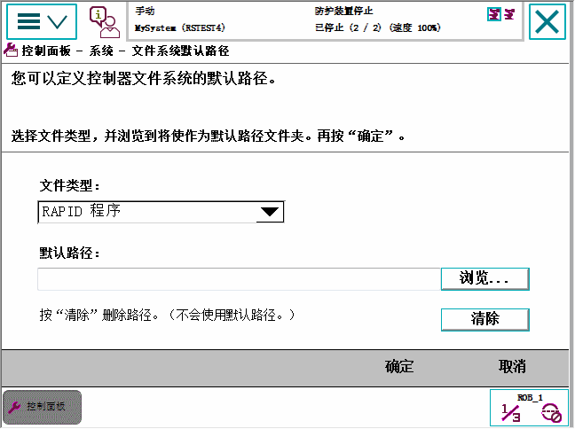

您可以使用 FlexPendant 设置某些操作的个别默认路径。
可设置下面的默认路径：:
保存和加载 RAPID 程序.
保存和加载 RAPID 模块.
保存和恢复配置文件.
此功能在登录用户获得授权的情况下可用。用户授权可通过RobotStudio进行处理，请参见操作员手册 - RobotStudio。
使用此程序设置默认路径。
操作
1
在 ABB 菜单上，点击 Control Panel（控制面板），然后点击 FlexPendant.
2
点击 File System Default Path（文件系统默认路径）。

3
点击 File type（文件类型）菜单选择默认路径的类型：
RAPID 程序
RAPID 模块
配置文件
4
键入默认路径或点击 Browse（浏览）以选择所需位置。
5
必要时，可通过点击 Clear（清除）删除以前输入的任何路径。
6
点击 OK（确定）。